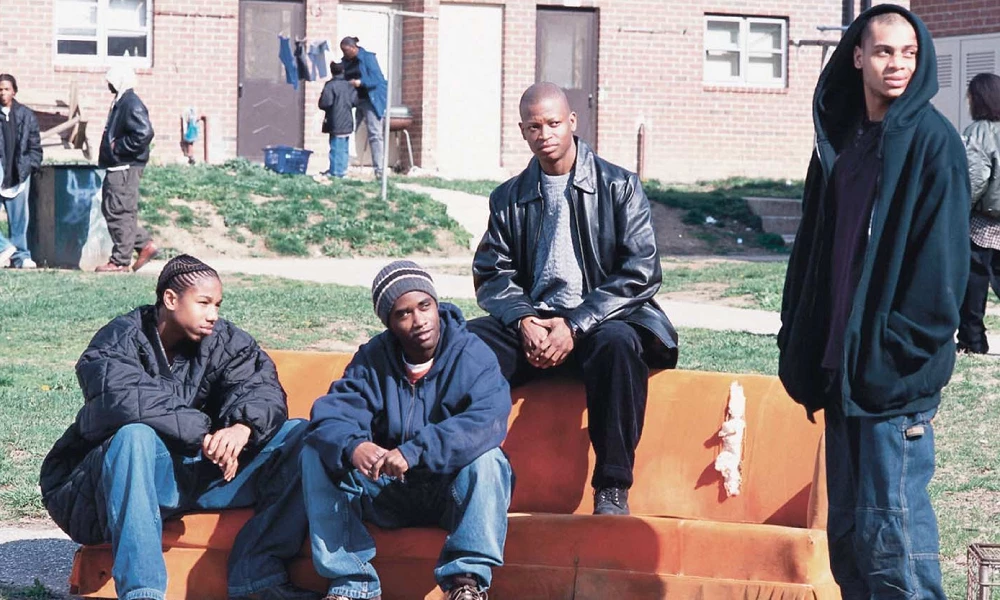
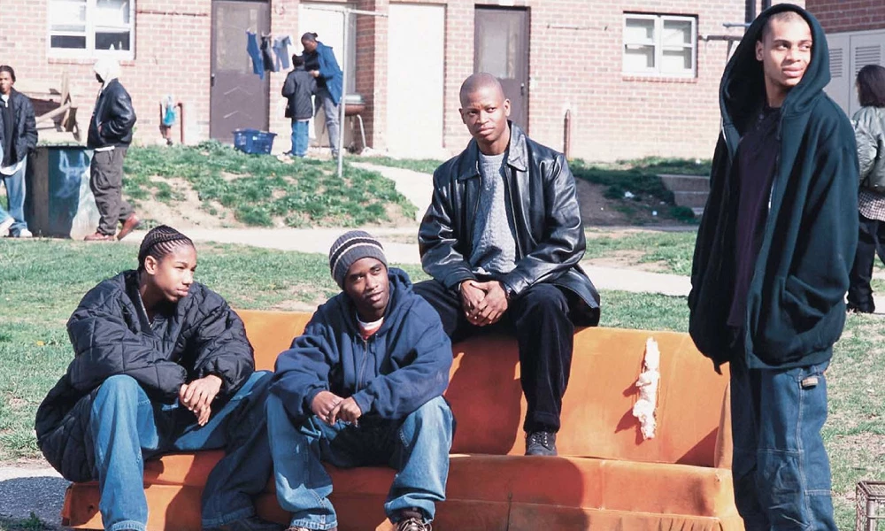

"The Wire"est une série télévisée qui explore les réalités sociales, économiques et politiques de Baltimore, avec un focus particulier sur le trafic de drogue, la police et les écoles.
Elle dépeint les défis de la communauté noire, notamment la pauvreté, la violence policière et les inégalités systémiques.
La série a joué un rôle clé dans la mise en lumière des luttes des Afro-Américains et a ouvert un débat sur les injustices sociales et raciales.
 
